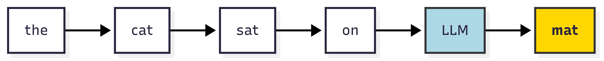
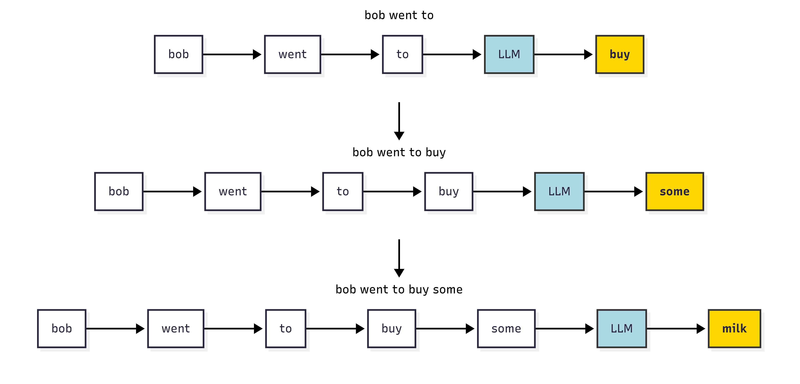

# # Core packages
# !pip install \
# yfinance \
# finvizfinance \
# transformers \
# pandas \
# numpy \
# statsmodels \
# holidays \
# plotly \
# ipywidgets \
# scikit-learn
# !pip3 install torch torchvision --index-url https://download.pytorch.org/whl/cpu --quietECON 227 - How Do Large Language Models Predict?
Python
Language Model Prediction
This notebook explores how large language models (LLMs) work by linking their probability-based predictions to real-world applications. We start with the basics of next-word prediction, then extend the idea to forecasting stock prices using news sentiment.
Prerequisite
Before you start, make sure you have the required libraries installed, if not, uncomment the lines below (i.e. remove the #) and run the cell to install them:
Important: Run this cell to load the libraries we need for running this notebook.
# load libraries we need to run this notebook
import os
import glob
import warnings
from datetime import datetime, timedelta
from math import sqrt
import numpy as np
import pandas as pd
import matplotlib.pyplot as plt
import seaborn as sns
import yfinance as yf
from finvizfinance.quote import finvizfinance
from transformers import pipeline
from statsmodels.tsa.statespace.sarimax import SARIMAX
import holidays
import plotly.graph_objects as go
from plotly.subplots import make_subplots
import ipywidgets as widgets
from IPython.display import display, clear_output
from sklearn.metrics import mean_squared_error, mean_absolute_error
from forecast_plot import create_plot1 Introduction: Distribution of LLM Predictions
Large language models like ChatGPT do something that seems very simple: Next word prediction.
What does that mean? It means that given a sequence of words, the model predicts the next word in the sequence. For example, if the input is “The cat sat on the”, the model might predict “mat” as the next word.

We saw an example of predicting just one word. These models predict only one word at a time, but they can do this for very long sequences of words.
For example: “bob went to the store” to buy some milk.

Here, let’s say we will output a total of \(T\) words to form a sentence, \(w_1, w_2, \ldots, w_{t-1}, w_t\) are the words in the sentence and the subscript \(t\) means the word is at the position \(t\).
What the model does is learning the probability distribution of the next word given the previous words. It is to create a list of non-negative numbers, one for each possible next word, that add up to 1.
Given the previous words \(w_1, w_2, \ldots, w_{t-1}\), the probability of predicting the next word \(w_{t}\) is called conditional probability: it essentially measures for all words in the vocabulary, “the probability of the next word being this word, based on what was already said”.
Mathematically, this is defined as below:
\[ P(w_t \mid w_1, w_2, \ldots, w_{t-1}) = \frac{P(w_1, w_2, \ldots, w_{t-1}, w_t)}{P(w_1, w_2, \ldots, w_{t-1})} \]
LLMs can approximate this probability by learning from training datasets. Then, when they make predictions, they will select the word at position \(t\) as the word with the maximum \(P(w_t \mid w_1, w_2, \ldots, w_{t-1})\).
With chain rule, the model can also use the conditionals for every position to calculate the probability of a whole sentence:
\[ P(w_1, w_2, \ldots, w_T) = \prod_{t=1}^T P(w_t\mid w_1, \ldots w_{t-1}) \]
These models give a probability distribution over the entire vocabulary (all the words the model was trained on). We can then pick the word with the highest probability as the next word or we can sample from this distribution to get more varied (creative) outputs.
Let’s look at an example of how this works in practice:
warnings.filterwarnings("ignore")
# Example vocabulary
vocab = ['buy', 'some', 'milk', 'along', 'the', 'way']
# Probabilities at each step (toy example)
probs_step1 = [0.8, 0.05, 0.05, 0.03, 0.04, 0.03] # 'buy' high
probs_step2 = [0.05, 0.7, 0.1, 0.05, 0.05, 0.05] # 'some' high
probs_step3 = [0.05, 0.05, 0.75, 0.05, 0.05, 0.05] # 'milk' high
prob_distributions = [probs_step1, probs_step2, probs_step3]
step_labels = ['Step 1: Predict "buy"', 'Step 2: Predict "some"', 'Step 3: Predict "milk"']
fig, axes = plt.subplots(3, 1, figsize=(8, 8), sharey=True)
for i, ax in enumerate(axes):
sns.barplot(x=vocab, y=prob_distributions[i], palette='muted', ax=ax)
ax.set_title(step_labels[i])
ax.set_ylim(0, 1)
ax.set_ylabel('Probability' if i == 0 else '')
ax.set_xlabel('Vocabulary')
# Highlight the max prob bar in gold
max_idx = prob_distributions[i].index(max(prob_distributions[i]))
ax.bar(max_idx, prob_distributions[i][max_idx], color='gold')
for patch, token, prob in zip(ax.patches, vocab, prob_distributions[i]):
height = patch.get_height()
ax.annotate(
f"{prob:.2f}",
xy=(patch.get_x() + patch.get_width() / 2, height),
xytext=(0, 3),
textcoords="offset points",
ha='center', va='bottom',
fontsize=9
)
plt.tight_layout()
plt.show()2 Sampling and Temperature
The example above shows us the process of generating \(T=3\): at each step, the model calculates the conditional probability of the next word and then selects the word with the highest probability to insert into the sentence. The final output we obtain is “buy some milk”.
To get more creative responses you change the distribution at the output where you pick the next word. Very simply this involves making the distribution sharper or flatter. If you make the distribution sharper, you are more likely to pick the word with the highest probability. If you make it flatter, you are more likely to pick a word that is not the most probable one.
This is called temperature. A higher temperature makes the distribution flatter, while a lower temperature makes it sharper. You would want to use a temperature of more than 1 \((1.2-1.5)\) for creative responses, and a temperature of less than 1 \((0.1 - 0.5)\) for more focused responses. For a balanced response, you can use a temperature of \(0.7-1\). Another set of parameters are called top-p and top-k sampling.
warnings.filterwarnings("ignore")
np.random.seed(42)
# Example vocabulary
vocab = [
'apple', 'banana', 'cherry', 'date', 'elderberry',
'fig', 'grape', 'honeydew', 'kiwi', 'lemon',
'mango', 'nectarine', 'orange', 'papaya', 'quince',
'raspberry', 'strawberry', 'tangerine', 'ugli', 'watermelon'
]
# Normalize to sum to 1
vocab_size = len(vocab)
base_probs = np.random.rand(vocab_size)
base_probs /= base_probs.sum()
def apply_temperature(probs, temp):
logits = np.log(probs + 1e-20)
scaled_logits = logits / temp
exp_logits = np.exp(scaled_logits)
return exp_logits / exp_logits.sum()
temperatures = [0.5, 1.0, 1.5]
distributions = [apply_temperature(base_probs, t) for t in temperatures]
fig, axes = plt.subplots(3, 1, figsize=(8, 8), sharey=True)
for i, (ax, dist, temp) in enumerate(zip(axes, distributions, temperatures)):
sns.barplot(x=vocab, y=dist, palette='muted', ax=ax)
ax.set_title(f'Temperature = {temp}')
ax.set_ylim(0, 0.25)
ax.set_ylabel('Probability' if i == 0 else '')
ax.set_xlabel('Vocabulary')
ax.tick_params(axis='x', rotation=90)
# Highlight the max-prob bar in gold
max_idx = dist.argmax()
ax.patches[max_idx].set_color('gold')
# Annotate each bar with its probability
for patch, prob in zip(ax.patches, dist):
height = patch.get_height()
ax.annotate(
f"{prob:.2f}",
xy=(patch.get_x() + patch.get_width() / 2, height),
xytext=(0, 3), # 3 points vertical offset
textcoords="offset points",
ha='center', va='bottom',
fontsize=9
)
plt.tight_layout()
plt.show()In the example above, we see how the probability distribution changes with different temperatures. A high temperature (1.5) results in a flatter distribution, meaning the model is more likely to sample from less probable tokens, while a low temperature (0.5) results in a sharper distribution, favoring the most probable tokens.
Note that while this is with words and language, the same idea applies to any sequential data, like stock prices, weather data, etc. The model looks at what happened before and tries to guess what comes next.
If you are interested in understanding the inner workings of these models, take a look at the interactive visualization at The Illustrated Transformer . It provides an excellent, hands-on way to explore the core ideas behind modern language models.
So, just like it guesses the next word in a sentence, it can guess the next day’s temperature or the next movement in a stock price, based on the pattern it sees in the earlier numbers.
n = 10
m = 9
# Generate actual data: random walk + small trend
actual_data = np.cumsum(np.random.normal(0, 1, n)) + 50
# Predictor approximates entire data closely with small noise everywhere
predicted = actual_data + np.random.normal(0, 0.2, n)
# Posterior uncertainty: low and roughly constant over entire period
posterior_std = np.full(n, 0.3)
upper = predicted + posterior_std
lower = predicted - posterior_std
plt.figure(figsize=(6,6))
plt.plot(range(n), actual_data, label="Actual Data", color='blue')
plt.plot(range(n), predicted, label="Predicted", color='orange')
plt.axvline(x=m-1, color='black', linestyle='--', label="Observed / Future Split")
plt.xlabel("Time")
plt.ylabel("Value")
plt.title("Stock price over time.")
plt.legend()
plt.show()Typically, when building a model to predict stock prices, you would use more information than just the past prices. For example, you might include things like public sentiment (how people feel about the stock), news headlines, or other features that could influence the price.
In the examples below, that’s exactly what we’re going to try! We’ll see how adding these extra features can help the model make better predictions about what happens next.
3 Predicting Stock Prices from News Headlines with AI
Just like LLMs predict the next word based on the context of prior words:
\[ P(w_t \mid w_1, w_2, \ldots, w_{t-1}) \]
We can use similar models to predict the next value in a time series, like stock prices or percentage changes in returns.
While prediction of next word in language models is inherently univariate that the model predicts the next word based solely on the sequence of previous words, predicting daily stock returns is often a multivariate problem as more exogenous factors must be taken into account. Here, we don’t just use past stock prices (returns) as context, but also incorporate additional features such as public sentiment from news headlines.
In other words, instead of predicting the next token from a single stream (words), we predict the next value in a time series using multiple sources of information: historical price data and external signals like news sentiment. This richer, multivariate context allows the model to capture more complex relationships and potentially make more accurate forecasts.
The comparison of word prediction and stock price prediction is given as follows:
| Word Prediction | Stock Price Prediction |
|---|---|
| Previous words | Past daily returns + aggregated news sentiment |
| Next word prediction | Future return prediction |
| Attention to important words | Feature weights on returns and sentiment |
| Temperature to control randomness | Confidence or prediction intervals in forecasts |
| Word probability distribution | Forecasted return distribution |
In this case study, we use a language model to analyze real-time news headlines alongside historical stock prices in order to forecast short-term changes in stock value.
You will:
- Collect news headlines about real companies (like Amazon or Starbucks)
- Use a pre-trained AI model to classify the sentiment (positive or negative) of these news headlines
- Combine that with stock prices
- Use a forecasting model to predict future price changes
- Visualize your results interactively
Preview the News Data
Here we use the finvizfinance packages to retrieve real-time news headlines for companies like Starbucks (SBUX).
# The code below will give us a snapshot of the 100 most recent news headlines for a particular stock in the last 30 days.
def get_news_data(ticker):
stock = finvizfinance(ticker)
news_df = stock.ticker_news()
news_df = pd.DataFrame(news_df)
# Drop NaN and clean whitespace
news_df = news_df.dropna(subset=["Title"])
news_df = news_df[news_df["Title"].str.strip() != ""]
news_df['Title'] = news_df['Title'].str.lower()
news_df['Date'] = pd.to_datetime(news_df['Date'])
news_df['DateOnly'] = news_df['Date'].dt.date
news_df["Ticker"] = ticker.upper()
# Remove the 'Date' column
news_df = news_df.drop(columns=['Date'])
return news_df.reset_index(drop=True)
# For the sake of reproducibility (so we always get the same results), we will use a a dataset that was scrapped using the same method at an earlier time (July - 2025)
# Uncomment the line below get a more recent snapshot of the data!
# SBUX_news_df = get_news_data("SBUX")
# SBUX_news_df.to_csv("datasets/SBUX_news.csv", index=False)Let’s look at what the cleaned news data looks like. We’ll start with Starbucks (SBUX).
Each row is a headline, what website it was from, the date it was published and a ticker indicating what stock it is for.
SBUX_news_df = pd.read_csv("datasets/SBUX_news.csv")
SBUX_news_df.head()Let’s take a closer look at the news titles. What would you say about their sentiment?
titles = SBUX_news_df['Title'].tolist()
print("News on Starbucks:\n")
for i, title in enumerate(titles[:5], start=1):
print(f"{i}. {title}")4 Classifying Headline Sentiment with LLM
Earlier, we explored how large language models (LLMs) predict the next word by learning the probability distribution of possible outcomes based on context.
Now, we apply a similar idea to entire sentences: in this case, financial news headlines. Instead of predicting the next word, the model assigns a probability to each sentiment category (e.g. POSITIVE, NEGATIVE, or NEUTRAL).
How it works:
- A pre-trained model reads the headline.
- It assigns probabilities to the sentiment labels.
- We keep only positive or negative headlines, since those are more likely to affect stock prices.
This is like asking:
Given the words in this sentence, what is the most likely emotion behind it?
We will rely on some AI tools to figure out.
BERT (short for Bidirectional Encoder Representations from Transformers) is a pretrained language model that learns a word’s meaning by looking at the words before and after it, so it understands context and tone well. And Hugging Face is an open-source platform and Python library that hosts many pretrained models (like BERT) and provides easy tools.
In this notebook, we are going to use Hugging Face’s pipeline() function to load a RoBERTa model: an optimized version of the BERT model trained to understand the tone of text. Although it is specifically trained on tweets and social media text. It’s well-suited to handling short, informal writing like news headlines.
This builds directly on our earlier discussion of LLMs predicting probability distributions, but here, the prediction is over sentiment classes rather than words.
We now apply a pre-trained large language model to each headline.
It returns:
POSITIVE: news that sounds good (e.g., “profits surge”)NEGATIVE: news that sounds bad (e.g., “lawsuit filed”)
Can you think of a positive and negative news headline?
Note that we will skip NEUTRAL news to focus on strong market signals.
warnings.filterwarnings("ignore")
# Here we are just specifying the classifier (AI model) that decides on a sentiment
classifier = pipeline("sentiment-analysis", model="cardiffnlp/twitter-roberta-base-sentiment-latest", device=-1)
# define a function to classify sentiment of each text
def classify_sentiment(text):
return classifier(text)[0]["label"].upper()
# define classify_sentiment to entire dataframe
def apply_sentiment(news_df):
news_df["Sentiment"] = news_df["Title"].apply(classify_sentiment)
return news_df # [news_df["Sentiment"] != "NEUTRAL"] # remove neutral headlines
def process_sentiment(news_df):
grouped = news_df.groupby(["DateOnly", "Sentiment"]).size().unstack(fill_value=0)
grouped = grouped.reindex(columns=["POSITIVE", "NEGATIVE"], fill_value=0)
# Calculate a rolling 7-day total of positive headlines
grouped["7day_avg_positive"] = grouped["POSITIVE"].rolling(window=7, min_periods=1).sum()
# Calculate a rolling 7-day total of negative headlines
grouped["7day_avg_negative"] = grouped["NEGATIVE"].rolling(window=7, min_periods=1).sum()
# Calculate the percentage of positive headlines each day (out of total positive + negative)
grouped["7day_pct_positive"] = grouped["POSITIVE"] / (grouped["POSITIVE"] + grouped["NEGATIVE"])
return grouped.reset_index()Let’s use our model to see wether the sentence “I hate bananas” is negative or positive
Try changing the words inside classify sentiment to see wether its is classified positive or negative
classify_sentiment("I hate bananas") # You can change the words inside the function to test anything you want! Now let’s apply this to our entire SBUX_news_df and see how each news headline is classified.
news_df = apply_sentiment(SBUX_news_df) # Classify sentiment of each Starbucks news headline
news_df.head()print("News Titles and Sentiments\n")
for i, row in news_df.iterrows():
if i < 5:
print(f"Title: {row['Title']}\nSentiment: {row['Sentiment']}\n")Let’s summarize the sentiment results by date. For each day we count the number of positive and negative headlines, then calculate 7-day moving averages and the daily percentage of positive news. This gives us a quick overview of news sentiment trends over time.
sentiment_df = process_sentiment(news_df) # Summarize daily sentiment statistics
sentiment_df.head() # Display the first 5 rows of the dataframeWhat this table shows?
This table is the output of a function that summarizes news sentiment over time.
Each row corresponds to a specific date and gives us a snapshot of how positive or negative the news headlines were for that day and the surrounding week.
Markets move not just based on today’s headlines, but on short-term trends in public sentiment.
This table lets us track how optimism or pessimism is building up over time, which we can later use to help predict stock price movements.
Why is this useful?
- We know that in the last 100 news stories about NVIDIA 24 have been positive and 5 have been negative.
- If the
7day_pct_positiveis rising, the overall tone of news is getting more optimistic. - If it’s dropping, it could mean public or investor concern is growing.
- We can later plot this and compare it against stock price to see if sentiment influences market behavior.
5 Getting Stock Price Data
We are using the yfinance package to get real stock price data directly from Yahoo Finance. The function below helps us download historical stock prices and compute the daily percentage change in the stock’s closing price. To make sure our results are replicable, this data has been saved as a .csv file “datasets/SBUX_price.csv”
This allows us to analyze how stock prices change over time.
# The code below will give us a snapshot of stock prices for the duration in we have news headlines for.
def get_stock_data(ticker, start, end):
stock = yf.download(ticker, start=start, end=end)
# Flatten columns if multi-indexed (e.g., multiple tickers)
if isinstance(stock.columns, pd.MultiIndex):
stock.columns = ['_'.join(col).strip() for col in stock.columns] # "Close_SBUX", etc.
close_col = f"Close_{ticker}"
else:
close_col = "Close"
stock["Pct_Change"] = stock[close_col].pct_change() * 100
stock.reset_index(inplace=True)
stock["DateOnly"] = pd.to_datetime(stock["Date"])
return stock[["DateOnly", "Pct_Change"]]
# merges sentiment and stock data by date, and lags sentiment by one day to align with price changes.
def combine_data(sent_df, stock_df):
sent_df = sent_df.reset_index(drop=True)
stock_df = stock_df.reset_index(drop=True)
sent_df["DateOnly"] = pd.to_datetime(sent_df["DateOnly"])
stock_df["DateOnly"] = pd.to_datetime(stock_df["DateOnly"])
return (
pd.merge(sent_df, stock_df, on="DateOnly", how="inner")
.assign(lagged_sentiment=lambda df: df["7day_pct_positive"].shift(1))
)
# For the sake of reproducibility (so we always get the same results), we will use a a dataset that was scrapped using the same method at an earlier time (July - 2025)
# Uncomment the line below get a more recent snapshot of the data !
# SBUX_news_df["DateOnly"] = pd.to_datetime(SBUX_news_df["DateOnly"])
# start_date = SBUX_news_df["DateOnly"].min() - pd.Timedelta(days=1)
# end_date = SBUX_news_df["DateOnly"].max() + pd.Timedelta(days=1)
# stock_df = get_stock_data("SBUX", start_date, end_date)
# stock_df.to_csv("datasets/SBUX_price.csv", index=False)
SBUX_price_df = pd.read_csv("datasets/SBUX_price.csv")
SBUX_price_df.head()Now we bring together the sentiment summary data and the stock price changes. By merging these two datasets, we can analyze how changes in news sentiment might be related to changes in Starbucks’ stock price. This combined dataset will help us answer the question: “Does positive news sentiment lead to an increase in stock price?”
combined_df = combine_data(sentiment_df, SBUX_price_df)
combined_dfForecasting Future Stock Changes with Sentiment
In this notebook, we will try to predict future stock price changes using the SARIMAX model, a powerful forecasting model that allows us to include external information, in our case, public sentiment. For those who are interested in learning more about the SARIMAX model and its implementation in Python, see this comprehensive guide on GeeksforGeeks.
Below, we define two key functions for our forecasting workflow:
get_future_dates(): Returns the next business days for which we want to make predictions.fit_and_forecast(): Uses both historical stock prices and recent news sentiment to predict how Starbucks’ (SBUX) stock price might change over the next few days. This function fits a SARIMAX model, which incorporates both past price data and the influence of news sentiment, and then generates forecasts along with confidence intervals.
Next, we will use a pre-defined create_plot() function to generate an interactive line chart that visualizes both stock price percentage changes and sentiment trends over time. This allows us to explore the relationship between market sentiment and stock performance in a clear, interactive way.
By combining these functions, we can see how shifts in news sentiment may impact SBUX’s future stock movements. The forecasting approach essentially answers the question: “Given recent sentiment, what does the model predict for this stock’s price in the coming days?”
# business days we should forecast for
def get_future_dates(start_date, num_days):
if not isinstance(start_date, pd.Timestamp):
start_date = pd.to_datetime(start_date)
us_holidays = holidays.US()
future_dates = []
current_date = start_date + pd.Timedelta(days=1)
while len(future_dates) < num_days:
if current_date.weekday() < 5 and current_date.date() not in us_holidays:
future_dates.append(current_date)
current_date += pd.Timedelta(days=1)
return future_dates
# prediction model
def fit_and_forecast(combined_df, forecast_steps=3):
combined_df = combined_df.dropna(subset=['Pct_Change', 'lagged_sentiment'])
endog = combined_df['Pct_Change']
exog = combined_df['lagged_sentiment']
model = SARIMAX(endog, exog=exog, order=(1, 1, 1))
fit = model.fit(disp=False)
future_dates = get_future_dates(combined_df.index[-1], forecast_steps)
future_exog = np.tile(combined_df['lagged_sentiment'].iloc[-1], forecast_steps).reshape(-1, 1)
forecast = fit.get_forecast(steps=forecast_steps, exog=future_exog)
return forecast.predicted_mean, forecast.conf_int(), future_datesPlot: Sentiment vs Stock % Change Forecast
This chart shows how news sentiment about a company relates to its stock price changes over time, and how we can use this relationship to make simple predictions.
- The blue line shows the standardized 7-day average of positive sentiment extracted from financial news headlines. A higher value means news sentiment was more positive.
- The green line shows the actual daily percentage change in the company’s stock price.
- The red line shows our simple forecast of future stock movement based on past sentiment trends. The shaded red area represents uncertainty around the forecast (a 95% confidence interval).
We want to see whether the emotions in the news (blue) can help us predict price changes (green and red). If they move together, it suggests that public mood might influence investor behavior.
This plot helps us visualize correlations and test basic forecasting using real-world data like stock prices and media sentiment.
combined_df['DateOnly'] = pd.to_datetime(combined_df['DateOnly']) # convert to datetime
combined_df.set_index('DateOnly', inplace=True) # use as index
combined_df.sort_index(inplace=True) # ensure time order
forecast_mean, forecast_ci, forecast_index = fit_and_forecast(combined_df)
create_plot(combined_df, forecast_mean, forecast_ci, forecast_index)Disclaimer: This is a simplified model. In reality, stock prices are influenced by many factors, such as interest rates, earnings reports, geopolitical events, and investor speculation. This chart only considers one variable: news sentiment. It should not be used for actual trading decisions.
Think about what you would include in a model other than news to help us predict how a stock price might change ?
6 How Do AIs Feel About AI?
In this section of the notebook, we explore how our AI Sentiment Analysis model feels about AI-related stocks. That’s a mouthful!
The goal is to see if public sentiment (as captured by the headlines) is generally optimistic or pessimistic toward leading AI companies — as interpreted by another AI (we are using BERT here!).
We’ll start by selecting the top 10 AI stocks in 2025 as suggested by financial news magazine, Forbes - ACN (Accenture) - ADBE (Adobe) - AMD (Advanced Micro Devices) - APP (Applovin) - AVGO (Broadcom) - CRM (Salesforce) - MRVL (Marvell Technology) - MU (Micron Technology) - NVDA (NVIDIA) - QCOM (Qualcomm)
For each company, we will: 2. Classify the sentiment using our RoBERTa-based model 1. Pull recent news headlines 3. Analyze the 7-day rolling trends in public sentiment 4. Compare results across companies
Let’s find out if the machines love themselves ?
# This code collects recent news headlines for each company in our AI stock list. It uses our `get_news_data()` which we defined above.
ai_tickers = ["ACN", "ADBE", "AMD", "APP", "AVGO", "CRM", "MRVL", "MU", "NVDA", "QCOM"] # Top 10 AI stocks
all_news = []
def fetch_all_news(ticker_list):
all_news = []
for ticker in ticker_list:
try:
news = get_news_data(ticker)
all_news.append(news)
except Exception as e:
print(f"Failed to get news for {ticker}: {e}")
if all_news:
return pd.concat(all_news, ignore_index=True)
else:
return pd.DataFrame()
# For the sake of reproducability (so we always get the same results), we will use a a dataset that was scrapped using the same method at an earlier time (July - 2025)
# Uncomment the line below get a more recent snapshot of the data !
# Usage :
# AI_combined_news_df = fetch_all_news(ai_tickers)
# #AI_combined_news_df = pd.concat(all_news, ignore_index=True)
# AI_combined_news_df.to_csv("datasets/AI_news_snapshot.csv", index=False)
# AI_sentiment_news_df = apply_sentiment(AI_combined_news_df)
# AI_sentiment_news_df.to_csv("datasets/AI_news_sentiment.csv", index=False)AI_sentiment_news_df = pd.read_csv("datasets/AI_news_sentiment.csv")
AI_sentiment_news_df.head()ThisAI_process_sentiment does for a bunch of companies what we did for SBUX. It automatically collect all their news headlines and put them in one place for analysis.
def AI_process_sentiment(news_df):
filtered = news_df[news_df["Sentiment"].isin(["POSITIVE", "NEGATIVE"])].copy()
# Group by DateOnly, Ticker, Sentiment → count headlines
grouped = (
filtered
.groupby(["DateOnly", "Ticker", "Sentiment"])
.size()
.unstack(fill_value=0)
.reset_index()
)
# Ensure both sentiment columns exist
if "POSITIVE" not in grouped.columns:
grouped["POSITIVE"] = 0
if "NEGATIVE" not in grouped.columns:
grouped["NEGATIVE"] = 0
# Sort for rolling computation
grouped = grouped.sort_values(["Ticker", "DateOnly"])
# 7-day rolling sums by ticker
grouped["7day_avg_positive"] = (
grouped.groupby("Ticker")["POSITIVE"]
.transform(lambda x: x.rolling(window=7, min_periods=1).sum())
)
grouped["7day_avg_negative"] = (
grouped.groupby("Ticker")["NEGATIVE"]
.transform(lambda x: x.rolling(window=7, min_periods=1).sum())
)
# Compute % positive
grouped["7day_pct_positive"] = grouped["7day_avg_positive"] / (
grouped["7day_avg_positive"] + grouped["7day_avg_negative"]
)
return grouped[["DateOnly", "Ticker", "7day_pct_positive"]]
AI_sentiment_df = AI_process_sentiment(AI_sentiment_news_df)
AI_sentiment_df.head()Like we did with the SBUX stock above let’s get stock prices for all of our AI stocks now.
# Match date range to your sentiment dataset
start_date = pd.to_datetime(AI_sentiment_df["DateOnly"]).min() - pd.Timedelta(days=1)
end_date = pd.to_datetime(AI_sentiment_df["DateOnly"]).max()
def fetch_and_save_stock_data(ticker_list, start_date, end_date, save_dir="data/ai_prices"):
"""
Fetches stock price data for each ticker in the list and saves it as a CSV file.
Prints a success or error message for each ticker.
"""
os.makedirs(save_dir, exist_ok=True)
for ticker in ticker_list:
try:
stock_df = get_stock_data(ticker, start_date, end_date)
stock_df["Ticker"] = ticker
file_path = f"{save_dir}/{ticker}_price.csv"
stock_df.to_csv(file_path, index=False)
except Exception as e:
print(f"Failed to get stock data for {ticker}: {e}")
# For the sake of reproducability (so we always get the same results), we will use a a dataset that was scrapped using the same method at an earlier time (July - 2025)
# Uncomment the line below get a more recent snapshot of the data !
# Usage :
# fetch_and_save_stock_data(ai_tickers, "start_date", "end_date")
# price_files = glob.glob("data/ai_prices/*.csv")
# price_dfs = [pd.read_csv(f) for f in price_files]
# AI_combined_price_df = pd.concat(price_dfs, ignore_index=True)
# AI_combined_price_df.to_csv("datasets/AI_top10_price_snapshot.csv", index=False)
AI_stock_prices = pd.read_csv("datasets/AI_top10_price_snapshot.csv")
AI_stock_prices.head()As we did before let’s merge everything into one dataframe to analyse it!
# Ensure both DateOnly columns are datetime
AI_sentiment_df['DateOnly'] = pd.to_datetime(AI_sentiment_df['DateOnly'])
AI_stock_prices['DateOnly'] = pd.to_datetime(AI_stock_prices['DateOnly'])
# Merge on DateOnly and Ticker
final_df = pd.merge(
AI_stock_prices,
AI_sentiment_df,
on=['DateOnly', 'Ticker'],
how='inner'
)
final_df.head()Similar to our approach with the SBUX stock price, we can fit a SARIMAX model to this combined dataset and forecast the percentage change in AI stock prices for the next 7 business days, using both historical price trends and recent news sentiment as inputs.
def fit_and_forecast(final_df, forecast_steps=7):
from statsmodels.tsa.statespace.sarimax import SARIMAX
import numpy as np
import pandas as pd
# Drop missing values
final_df = final_df.dropna(subset=['Pct_Change', 'lagged_sentiment'])
# Define endogenous and exogenous variables
endog = final_df['Pct_Change']
exog = final_df['lagged_sentiment']
# Fit SARIMAX
model = SARIMAX(endog, exog=exog, order=(1, 1, 1), enforce_stationarity=False, enforce_invertibility=False)
fit = model.fit(disp=False)
# Future exog (use last known lagged sentiment)
last_sentiment = exog.iloc[-1]
future_exog = np.full(shape=(forecast_steps,), fill_value=last_sentiment)
# Forecast
forecast = fit.get_forecast(steps=forecast_steps, exog=future_exog)
forecast_mean = forecast.predicted_mean
forecast_ci = forecast.conf_int()
# Create future dates
last_date = final_df.index[-1]
forecast_index = pd.date_range(start=last_date + pd.Timedelta(days=1), periods=forecast_steps, freq='B')
return forecast_mean, forecast_ci, forecast_indexfinal_df = final_df.copy()
# Sort and index
final_df['DateOnly'] = pd.to_datetime(final_df['DateOnly'])
final_df.set_index('DateOnly', inplace=True)
final_df.sort_index(inplace=True)
# Create lagged and standardized sentiment
final_df['sentiment_std'] = (
final_df['7day_pct_positive'] - final_df['7day_pct_positive'].mean()
) / final_df['7day_pct_positive'].std()
final_df['lagged_sentiment'] = final_df['sentiment_std'].shift(1)
final_df.dropna(subset=['lagged_sentiment', 'Pct_Change'], inplace=True)
# Now call
forecast_mean, forecast_ci, forecast_index = fit_and_forecast(final_df)
create_plot(final_df, forecast_mean, forecast_ci, forecast_index)How well does the model predict?
We can fetch the actual data to see how well our model predicts the AI stocks.
# Create function to generate the compare window
def get_compare_window(compare_start, compare_target_end):
# Define today to avoid fetching beyond range
today = pd.Timestamp(datetime.utcnow().date()) # use UTC date
compare_end = min(today, compare_target_end)
return compare_start, compare_end
# Create function to fetch the actual percentage change
def fetch_actual_pct_changes(ticker_list, start_date, end_date, buffer_days=7):
# This function fetches the pct change of the given list of tickers and return as a DataFrame
rows = []
# fetch one ticker at a time to avoid group_by complexity
start_fetch = (start_date - pd.Timedelta(days=buffer_days)).strftime('%Y-%m-%d')
end_fetch = (end_date + pd.Timedelta(days=1)).strftime('%Y-%m-%d')
for t in ticker_list:
try:
df = yf.download(t, start=start_fetch, end=end_fetch, progress=False, interval='1d', auto_adjust=False)
if df.empty:
# no data for ticker in window
continue
df.index = pd.to_datetime(df.index).normalize()
# compute percent change on Close
if 'Adj Close' in df.columns:
price_col = 'Adj Close'
else:
price_col = 'Close'
df['pct_change'] = df[price_col].pct_change() * 100.0
# select only rows in [start_date, end_date]
sel = df.loc[(df.index >= start_date) & (df.index <= end_date)]
# Fix: Properly select the pct_change column
sel = sel[['pct_change']].dropna()
for idx, r in sel.iterrows():
rows.append({'DateOnly': idx, 'Ticker': t, 'Actual_Pct_Change': r['pct_change']})
except Exception as e:
print(f"yfinance fetch failed for {t}: {e}")
actuals_df = pd.DataFrame(rows)
if not actuals_df.empty:
actuals_df['DateOnly'] = pd.to_datetime(actuals_df['DateOnly']).dt.normalize()
return actuals_df
# Function to compare predictions with actuals
def compare_predictions(pred_mean, pred_index, actuals_df, ticker=None):
pred_df = pd.DataFrame({
'DateOnly': pd.to_datetime(pred_index).normalize(),
'Predicted_Pct_Change': np.asarray(pred_mean).astype(float)
})
if ticker is not None:
actuals_df = actuals_df[actuals_df['Ticker'] == ticker].copy()
# If actuals contain multiple tickers and ticker=None, will compare using all actual rows
merged = pd.merge(pred_df, actuals_df, on='DateOnly', how='inner')
if merged.empty:
print("No overlapping observed days to compare (maybe market closed or today < start).")
return merged, {}
# If actuals has multiple tickers for same DateOnly (if ticker=None), aggregated handling:
if 'Ticker' in merged.columns and ticker is None:
# average actuals across tickers for that day
aggregated = merged.groupby('DateOnly').agg({
'Predicted_Pct_Change': 'first',
'Actual_Pct_Change': 'mean'
}).reset_index()
mdf = aggregated
else:
mdf = merged[['DateOnly', 'Predicted_Pct_Change', 'Actual_Pct_Change']].copy()
# metrics
mae = mean_absolute_error(mdf['Actual_Pct_Change'], mdf['Predicted_Pct_Change'])
rmse = sqrt(mean_squared_error(mdf['Actual_Pct_Change'], mdf['Predicted_Pct_Change']))
metrics = {'count': len(mdf), 'MAE': mae, 'RMSE': rmse}
return mdf, metricsThe evaluation metrics we use are the Mean Absolute Error (MAE) and Root Mean Squared Error (RMSE), which measure how far off our predictions are from the actual stock price changes.
The MAE is the average of the absolute differences between predicted and actual values, while the RMSE is the square root of the average of squared differences. Usually, lower values of these metrics indicate better model performance.
The MAE is calculated as follows: \[ \text{MAE} = \frac{1}{n} \sum_{i=1}^{n} |y_i - \hat{y}_i| \] And the RMSE is calculated as follows: \[ \text{RMSE} = \sqrt{\frac{1}{n} \sum_{i=1}^{n} (y_i - \hat{y}_i)^2} \]
However, we must note that these metrics are not unitless, meaning they depend on the scale of the data. In our case, since we are predicting percentage changes in stock prices, the MAE and RMSE will be in percentage points.
# Fit the previous example for comparison
compare_start = forecast_index[0]
compare_target_end = forecast_index[-1]
compare_start, compare_end = get_compare_window(compare_start, compare_target_end)
# Create the actual comparison DataFrame
actuals_df = fetch_actual_pct_changes(ai_tickers, compare_start, compare_end, buffer_days=7)
# Calculate the metrics
pred_mean_values = forecast_mean.values # array-like
mdf, metrics = compare_predictions(pred_mean_values, forecast_index, actuals_df)
print("Comparison metrics:")
print(f"Count: {metrics['count']}\nMAE: {metrics['MAE']:.2f}\nRMSE: {metrics['RMSE']:.2f}\n")
if not mdf.empty:
print(mdf.head())Now, with the actual stock price data, let’s visualize it in the plot alongside our predictions to see if our confidence intervals capture the actual movements well.
# Visualize the comparison and evaluate the confidence intervals
create_plot(final_df, forecast_mean, forecast_ci, forecast_index, actuals_df)
- Do you think the model’s predictions are accurate enough for practical use?
- What strategies could you use to:
Share your ideas with your classmates!
- Reduce the width of the confidence intervals?
- Improve the accuracy of the predictions?
- Increase the model’s robustness to outliers?
Conclusion
This notebook provides an overview of how large language models (LLMs) make predictions, typically with an example showing the distribution of a LLM’s prediction and an example of stock price forecasting based on historical data and news sentiment. It demonstrates how LLMs work and how they can be applied to real-world problems like stock price prediction. The use of LLM and sentiment analysis allows us to incorporate additional qualitative information into our predictions, potentially allowing for better inference and forecasting of economic variables like stock prices.
However, it is important to note that the model’s predictions are not perfect and should be used with caution. The notebook also highlights the importance of evaluating the model’s performance using metrics like MAE and RMSE, and encourages users to think critically about how to improve the model’s accuracy and robustness.
Key Takeaways
- Large language models (LLMs) predict the next word in a sequence by learning the probability distribution of possible outcomes based on context.
- LLMs can also be used to predict future values in a time series, such as stock prices, by incorporating additional features like public sentiment.
- The SARIMAX model is a powerful forecasting model that allows us to include external information, such as news sentiment, in our predictions.
- We must evaluate the model’s performance using metrics like MAE and RMSE to ensure its predictions are reliable.
Glossary
- Large Language Model (LLM): A type of AI model that predicts the next word in a sequence based on the context of previous words.
- Next Word Prediction: The task of predicting the next word in a sequence given the previous words.
- Sentiment Analysis: The process of determining the emotional tone behind a series of words, used to understand the sentiment expressed in text.
- SARIMAX Model: A statistical model used for forecasting time series data that can incorporate external variables.
- Mean Absolute Error (MAE): A measure of prediction accuracy that calculates the average absolute difference between predicted and actual values.
- Root Mean Squared Error (RMSE): A measure of prediction accuracy that calculates the square root of the average of squared differences between predicted and actual values.
References
- Kirsch, N. (2024, April 29). 10 Best AI Stocks Of August 2024. Forbes Advisor. https://www.forbes.com/advisor/investing/best-ai-stocks/
- Chen, J. (2023, October 6). Efficient Market Hypothesis (EMH): Forms and criticisms. Investopedia. https://www.investopedia.com/terms/e/efficientmarkethypothesis.asp
- Yahoo Finance. (n.d.). Yahoo Finance — Stocks, financial news, quotes, and market data. Retrieved August 1, 2025, from https://ca.finance.yahoo.com/
- Aroussi, R. (n.d.). yfinance [Python package]. GitHub. Retrieved August 1, 2025, from https://github.com/ranaroussi/yfinance
- Li, T. (2025). finvizfinance (Version 1.1.1) [Python package]. PyPI. Retrieved August 1, 2025, from https://pypi.org/project/finvizfinance/
- GeeksforGeeks. (2023, September 27). Complete guide to SARIMAX in Python. https://www.geeksforgeeks.org/python/complete-guide-to-sarimax-in-python/
- Sprenger, T. O., Tumasjan, A., Sandner, P. G., & Welpe, I. M. (2014, February 5). Twitter sentiment and stock market movements: The predictive power of social media. VoxEU. https://cepr.org/voxeu/columns/twitter-sentiment-and-stock-market-movements-predictive-power-social-media